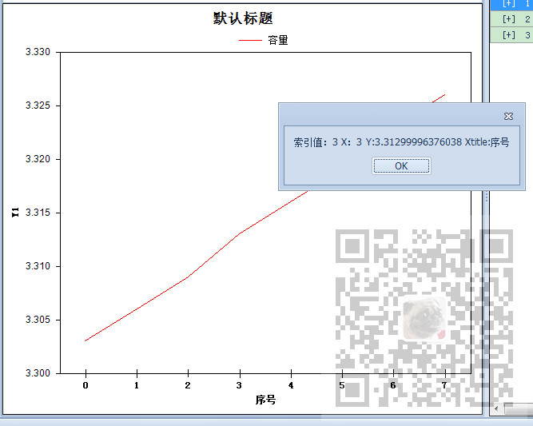

WInforn中设置ZedGraph的焦点显示坐标格式化以及显示三个坐标数的解决办法：
https://blog.csdn.net/BADAO_LIUMANG_QIZHI/article/details/102466190
Winform中实现ZedGraph的多条Y轴(附源码下载)：
https://blog.csdn.net/BADAO_LIUMANG_QIZHI/article/details/100132245
在多条曲线中，鼠标双击面板，弹窗显示距离焦点最近的坐标的值。

注：
博客主页：
https://blog.csdn.net/badao_liumang_qizhi
关注公众号
霸道的程序猿
获取编程相关电子书、教程推送与免费下载。
双击事件绑定
zgc.DoubleClickEvent += zgc_DoubleClickEvent;
其中zgc
ZedGraphControl zgc
实现方法
private static bool zgc_DoubleClickEvent(ZedGraphControl sender, MouseEventArgs e)
{
PointF mousePt = new PointF(e.X, e.Y);
CurveItem nearstCurve;
int i ;
Global.zedGraphControl1.GraphPane.FindNearestPoint(mousePt, out nearstCurve,out i);
if (nearstCurve != null && nearstCurve.Points[i]!= null)
{
Double x = nearstCurve.Points[i].X;
Double y = nearstCurve.Points[i].Y;
string title = Global.zedGraphControl1.GraphPane.XAxis.Title.Text;
DevExpress.XtraEditors.XtraMessageBox.Show("索引值：" + i + " X：" + x + " Y:" + y + " Xtitle:" + title);
}
return true;
}